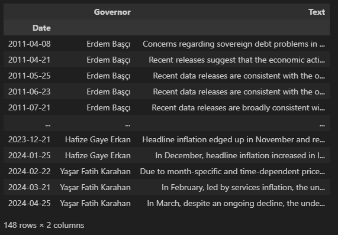
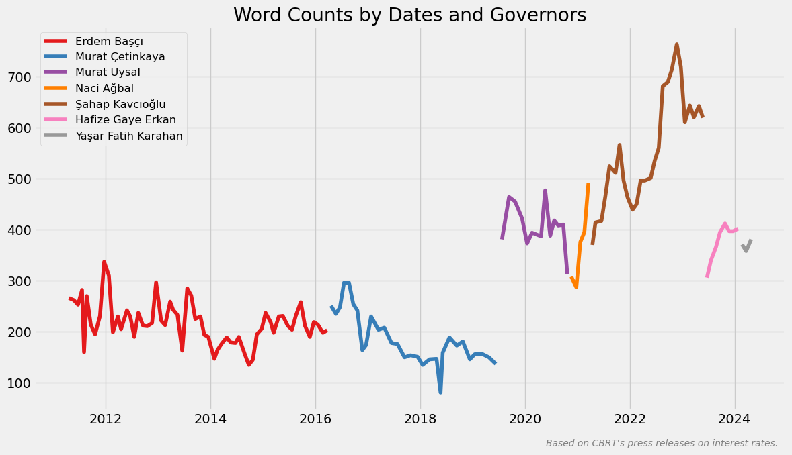
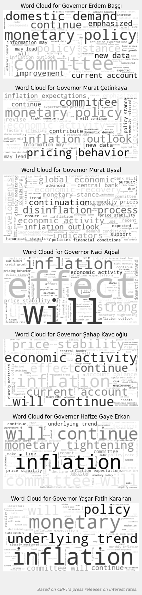
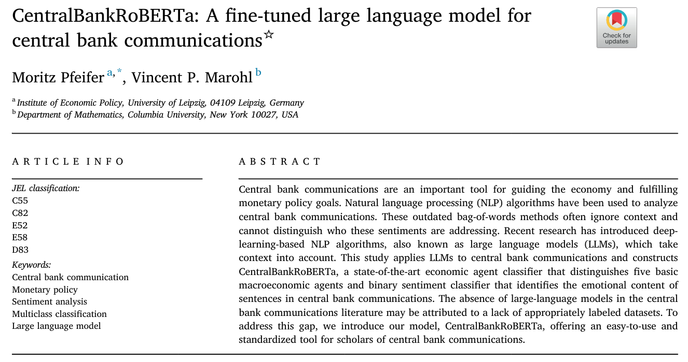
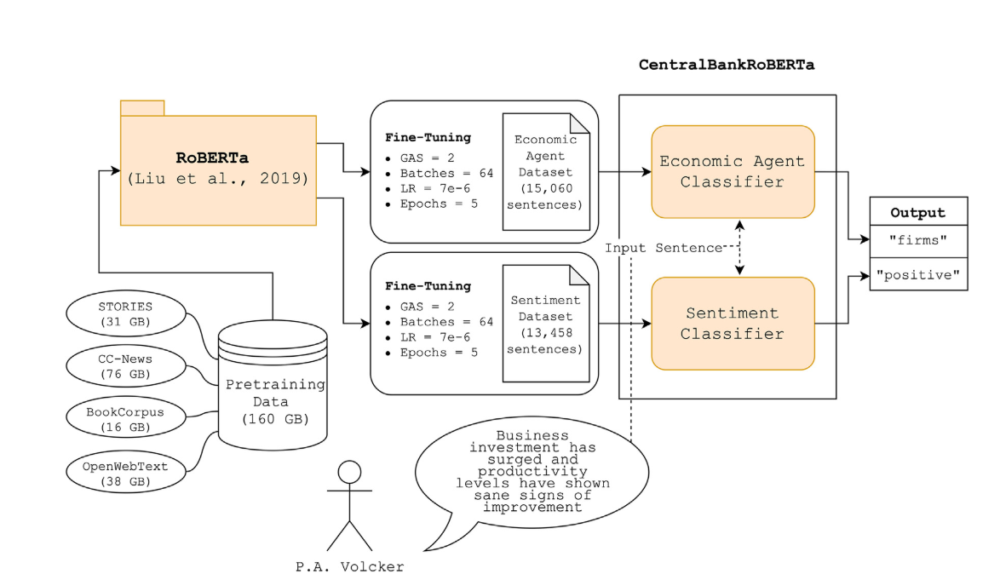
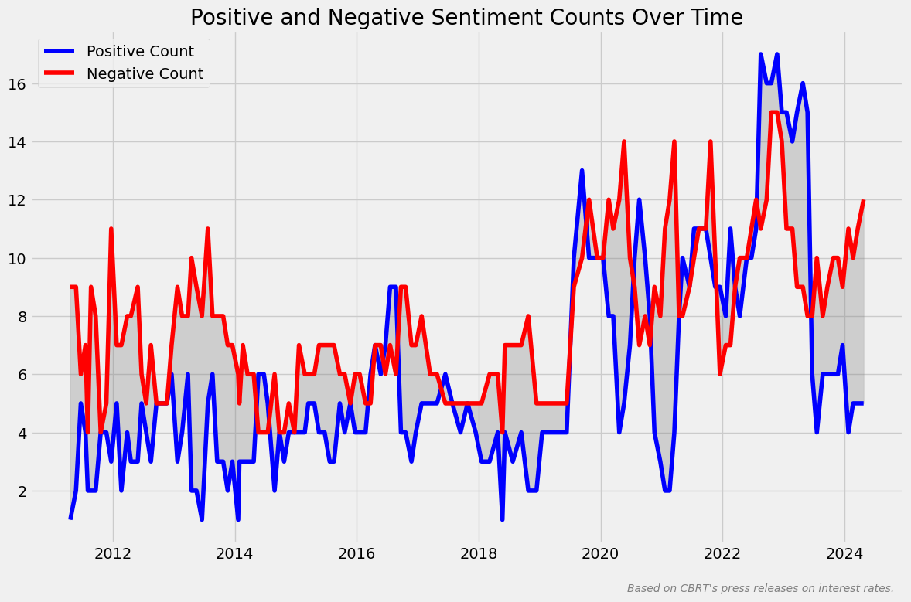

import pandas as pd
import numpy as np
import string
import nltk
from nltk.tokenize import word_tokenize
from wordcloud import WordCloud
from transformers import pipeline
import matplotlib.pyplot as plt
import matplotlib.cm as cm
plt.style.use('fivethirtyeight')Giriş
Faiz kararları sadece sayılardan ibaret değildir. Türkiye Cumhuriyet Merkez Bankası’nın (TCMB) faiz oranlarına ilişkin basın duyuruları da büyük bir öneme sahiptir. Bu duyurular, TCMB’nin kararlarını destekleyen veya açıklayan bir metin içerir ve bu metin, ekonomi uzmanları, yatırımcılar ve piyasa analistleri için kritik bir kaynaktır. Basın duyuruları temelde, TCMB’nin ekonomik göstergeleri nasıl yorumladığını ve gelecekteki politika eğilimlerini nasıl değerlendirdiğini içerir.
Veri seti, Erdem Başçı ve Yaşar Fatih Karahan arası dönemlerde yayınlanan 148 adet İngilizce duyuru metnini kapsamaktadır. Son veri 2024 yılının Nisan ayına aittir. cbrt_press_releases isimli excel dosyasında bulunan veri setine buradan ulaşabilirsiniz.
Kullanılacak Kütüphaneler
Veri Setinin İçe Aktarılması ve Bazı Ayarların Yapılması
df = pd.read_excel('cbrt_press_releases.xlsx')
df['Date'] = pd.to_datetime(df['Date'], dayfirst=True)
df = df.sort_values(by='Date')
df = df.set_index('Date')
Metin İçeriğinin Analizi
Metin analizinde NLTK kütüphanesini kullanacağız. NLTK (Natural Language Toolkit), doğal dil işleme (NLP) görevlerini gerçekleştirmek için kullanılan bir kütüphanedir.
Aşağıdaki gerekli olan indirme işlemlerini yapalım.
nltk.download('punkt')
nltk.download('stopwords')punkt, cümlelerin ve kelimelerin tokenize (parçalama) edilmesi için kullanılan bir veri modelidir. Tokenization, metni daha küçük parçalara ayırma işlemidir ve doğal dil işleme uygulamalarında sıkça kullanılır.
stopwords, dilin yapısı gereği sıklıkla karşılaşılan ve genellikle metin analizi veya doğal dil işleme uygulamalarında önemsiz olarak kabul edilen kelimelerdir.
Tarihlere ve başkanlara göre kelime sayıları
Kelimeleri sayacak word_counter isimli ve text parametresi bulunan bir fonksiyon yazalım.
def word_counter(text):
text = text.translate(str.maketrans('', '', string.punctuation))
text = text.translate(str.maketrans('', '', '\n\xa0'))
text = text.lower()
tokens = word_tokenize(text)
return len(tokens)Yukarıda ilk olarak, metindeki noktalama işaretlerini (string.punctuation ile tanımlı olanlar) kaldırıyoruz. Bu, metindeki noktalama işaretlerinin (virgül, nokta, ünlem işareti vb.) kelime sayısını etkilememesini sağlıyor. Ardından, metindeki boşlukları ve diğer belirli karakterleri (newline karakteri \n ve non-breaking space karakteri \xa0) kaldırıyoruz. Bu, metindeki boşlukların kelime sayısını etkilememesini sağlıyor. Metni lower() ile küçük harfe dönüştürüyoruz. Bu, büyük ve küçük harflerin ayrımını kaldırarak aynı kelimenin farklı biçimlerini aynı olarak değerlendirmesini sağlıyor. Metni word_tokenize() ile kelime parçalarına ayırıyoruz (tokenize işlemi). Bu, metindeki her bir kelimeyi ayrı bir öğe olarak ele alarak bu öğelerin sayısını saymamızı sağlıyor. Son olarak, kelime listesinin uzunluğunu len() ile hesaplayarak bu değeri döndürüyoruz.
df['Word Count'] = df['Text'].apply(word_counter)
num_governors = len(df['Governor'].unique())
colors = cm.Set1(np.linspace(0, 1, num_governors))
unique_governors = df['Governor'].unique()
plt.figure(figsize=(12, 7))
for i, governor in enumerate(unique_governors):
data = df[df['Governor'] == governor]
plt.plot(data.index, data['Word Count'], label=governor, linestyle='-', color=colors[i])
plt.title('Word Counts by Dates and Governors')
plt.text(
0.99,
-0.1,
"Based on CBRT's press releases on interest rates.",
verticalalignment='bottom',
horizontalalignment='right',
transform=plt.gca().transAxes,
color='gray',
fontsize=10,
fontstyle='italic'
)
plt.grid(True)
plt.legend(fontsize='small')
plt.tight_layout()
plt.show()Yukarıda ilk olarak, DataFrame’de bulunan Text sütunundaki her bir metin için word_counter fonksiyonunu çağırıyoruz ve her bir metnin kelime sayısı hesaplıyoruz. Görselde kullanmak için num_governors değişkenine başkan sayısını, colors değişkenine de bu başkan sayısı kadar renk atıyoruz. unique_governors ise daha sonra başkanları sırasıyla kullanacağımız için oluşturduğumuz bir değişken oluyor. Görseli oluştururken lejanttaki dönemlerine göre başkan sıralamasının önemini koruyoruz.

Başkanlara göre kelime bulutları
governors_texts = df.groupby('Governor')['Text'].apply(' '.join)
fig, axs = plt.subplots(7, 1, figsize=(16, 18))
for i, governor in enumerate(unique_governors, 1):
text = governors_texts[governor]
text = text.translate(str.maketrans('', '', string.punctuation))
text = text.translate(str.maketrans('', '', '\n\xa0'))
text = text.lower()
wordcloud = WordCloud(
background_color='white',
colormap='gray',
contour_color='black',
contour_width=1
).generate(text)
axs[i-1].imshow(wordcloud, interpolation='bilinear')
axs[i-1].set_title(f'Word Cloud for Governor {governor}', fontsize=12)
axs[i-1].axis('off')
plt.figtext(
0.99,
-0.3,
"Based on CBRT's press releases on interest rates.",
verticalalignment='bottom',
horizontalalignment='right',
transform=plt.gca().transAxes,
color='gray',
fontsize=9,
fontstyle='italic'
)
plt.tight_layout()
plt.show()Yukarıda, governors_texts ile başkanların kendi dönemlerinde yayınlanan duyuru metinlerini bir araya getiriyoruz. Ardından, WordCloud nesnesi oluşturarak bir kelime bulutu oluşturma işlemini gerçekleştiriyoruz. Detaylı bakalım.
WordCloud nesnesini oluştururken aşağıdaki parametreleri ve değerlerini kullandık.
background_color='white', kelime bulutunun arka plan rengini beyaz yapıyor. Yani, kelime bulutunun içindeki kelimeler beyaz bir arka plan üzerine yerleştiriliyor. colormap='gray', kelime bulutunda kullanılacak renk haritasını gri tonlarda olacak şekilde ayarlıyor. Kelimelerin yoğunluklarına göre farklı gri tonları kullanılıyor. contour_color='black', kelime bulutunun kenar çizgilerinin rengini siyah yapıyor. Bu, kelime bulutunu çevreleyen konturun siyah olacağı anlamına gelir. contour_width=1, kelime bulutunun kenar çizgilerinin kalınlığı 1 piksel olarak ayarlıyor. Bu, konturun ince olacağı anlamına gelir.
interpolation parametresine atadığımız bilinear değeri, görüntüyü daha pürüzsüz bir şekilde yeniden örnekleme yaparak görüntülerken, kenarları daha yumuşak hale getiriyor.

Tarihlere göre metinlerdeki pozitif/negatif duygu değişimleri
CentralBankRoBERTa, bir LLM’dir (large language model veya büyük dil modeli).

CentralBankRoBERTa, temelde beş temel makroekonomik aktörü ayıran bir ekonomik aktör sınıflandırıcısı ile merkez bankası iletişimlerindeki cümlelerin duygusal içeriğini belirleyen ikili bir duygu sınıflandırıcısını birleştirir. Bu, merkez bankası iletişimlerindeki cümlelerin duygusal tonunu ve ekonomik aktörleri tanımak için kullanılabilir.
Mimarisi aşağıdaki gibidir.

SentimentClassifier modeli, verilen bir cümlenin hane halkları, işletmeler, finans sektörü veya hükümet için olumlu mu yoksa olumsuz mu olduğunu belirlemek amacıyla tasarlanmıştır. Bu model, RoBERTa mimarisine dayanır ve doğru tahminler sağlamak için çeşitli ve kapsamlı bir veri kümesinde ince ayarlanmıştır (fine-tuned). Bir merkez bankasının iletişimini analiz etmek için duygusal içerikle ilgili uygun bir doğal dil işleme yöntemini test etmek üzere yapılan çalışmada FED, ECB ve BIS’den toplam 13,458 önceden etiketlenmiş cümle örneği kullanılmıştır.
Performans metrikleri şöyledir: Accuracy: 88%, F1 Score: 0.88, Precision: 0.88 ve Recall: 0.88
sentiment_classifier = pipeline(
'text-classification',
model='Moritz-Pfeifer/CentralBankRoBERTa-sentiment-classifier'
)
def classify_sentences(text):
text = text.replace('\n', '').replace('\xa0', '')
sentences = text.split('. ')
sentences = [sentence + '.' if not sentence.endswith('.') else sentence for sentence in sentences]
positive_count = 0
negative_count = 0
for sentence in sentences:
sentiment_result = sentiment_classifier(sentence)
positive_count += sum(1 for item in sentiment_result if item['label'] == 'positive')
negative_count += sum(1 for item in sentiment_result if item['label'] == 'negative')
return positive_count, negative_countYukarıda ilk olarak, pipeline fonksiyonunu çağırarak bir duygu sınıflandırma pipeline’ı oluşturuyoruz. Burada kullanılan model, Moritz Pfeifer tarafından oluşturulmuş CentralBankRoBERTa modelidir. Ardından, classify_sentences() fonksiyonunu tanımlıyoruz. Bu fonksiyon, bir metin alıyor ve metni cümlelere bölüyor. Metindeki \n ve \xa0 gibi boşlukları kaldırmak için replace() kullanıyoruz. Metni bir nokta ve boşluk ile cümlelere bölüyoruz. Cümle nokta ile bitmiyorsa cümlenin sonunda bir nokta olmasını sağlıyoruz. Pozitif ve negatif duyguların sayısını tutmak için positive_count ve negative_count isminde iki değişken tanımlıyor ve sıfır değerini atıyoruz. Her cümle için döngü oluşturuyoruz ve sentiment_classifier() fonksiyonunu çağırarak cümlenin duygusu belirliyoruz. Bu işlem, cümlenin duygusunu tahmin etmek için önceden eğitilmiş modeli kullanıyor. Duygu sonuçlarına bakarak pozitif ve negatif etiket sayılarını hesaplıyoruz. sentiment_result içindeki her bir öğe için etiketinin positive veya negative olup olmadığını kontrol ediyor ve sonuca göre ilgili sayaçları artırıyoruz. Son olarak fonksiyonda toplam pozitif ve negatif etiket sayılarını döndürüyoruz.
Aşağıda ise df’te, Positive Count ve Negative Count sütunları oluşturuyoruz ve classify_sentences() isimli text parametreli fonksiyonu çalıştırıyoruz.
df['Positive Count'] = 0
df['Negative Count'] = 0
df[['Positive Count', 'Negative Count']] = df['Text'].apply(classify_sentences).apply(pd.Series)
plt.figure(figsize=(12, 8))
plt.plot(df.index, df['Positive Count'], label='Positive Count', color='blue')
plt.plot(df.index, df['Negative Count'], label='Negative Count', color='red')
plt.fill_between(df.index, df['Positive Count'], df['Negative Count'], color='gray', alpha=0.3)
plt.title('Positive and Negative Sentiment Counts Over Time')
plt.text(
0.99,
-0.1,
"Based on CBRT's press releases on interest rates.",
verticalalignment='bottom',
horizontalalignment='right',
transform=plt.gca().transAxes,
color='gray',
fontsize=10,
fontstyle='italic'
)
plt.legend()
plt.tight_layout()
plt.show()
Gelecek içeriklerde görüşmek dileğiyle.